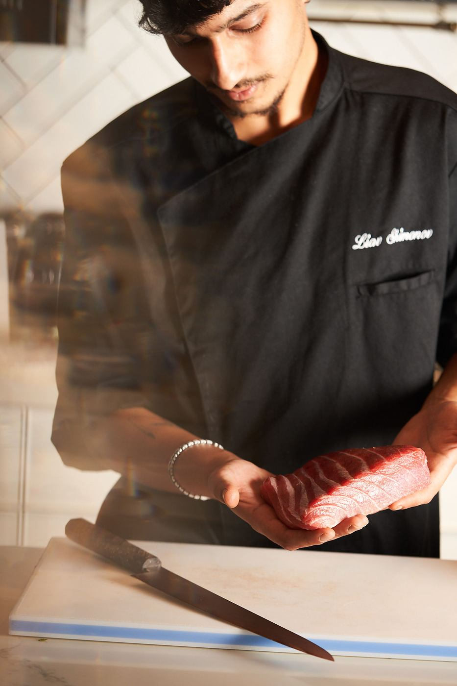

שף פרטי בבית: איך זה עובד מהשיחה הראשונה ועד הקינוח

ארוחת שף בבית נשמעת להרבה אנשים כמו משהו רחוק או מסובך. בפועל, זו אחת הדרכים הפשוטות ביותר להפוך ערב רגיל לאירוע - בתנאי שיודעים מה לצפות.
שף פרטי מגיע אליכם הביתה, מבשל במטבח שלכם ומגיש לשולחן. הכול מתחיל בשיחה קצרה על התאריך, מספר האורחים, מה אוהבים ומה לא, ומשם נבנה תפריט אישי. בבית צריך רק מטבח פנוי, כיריים ותנור שעובדים ומעט מקום במקרר. ביום עצמו אתם יושבים עם האורחים, והמנות יוצאות בקצב של השולחן.
מה זה שף פרטי?
שף פרטי מגיע אליכם, מבשל במטבח שלכם ומגיש לשולחן שלכם. זו החוויה של מסעדה טובה, בלי לצאת מהבית ובלי לחלוק את הערב עם שולחנות זרים. ההבדל הגדול הוא שהתפריט נכתב בשבילכם - לא בשביל מאות סועדים שהמסעדה צריכה לרצות בכל ערב.
מה לספר לשף בשיחה הראשונה?
ככל שהשף יודע יותר, התפריט מדויק יותר. לפני השיחה, כדאי שיהיו לכם תשובות לכמה שאלות פשוטות:
- תאריך ושעה - ומה בערך מספר האורחים.
- סוג הערב - ארוחת זוגות, יום הולדת, ערב משפחתי או מפגש חברים. כל אחד מהם מבקש קצב אחר.
- מה אוהבים - דגים, בשר, ירקות, מטבח מסוים שאתם מתגעגעים אליו.
- מה לא - אלרגיות, רגישויות, צמחונות, כשרות. חשוב לספר על כל דבר, גם אם הוא נראה קטן (איך מספרים לשף על אלרגיות וכשרות).
- מסגרת תקציב - גם אם היא רק בערך. היא עוזרת לבנות תפריט שמרגיש נכון בלי הפתעות (ממה מורכב המחיר של שף פרטי).
איך נבנה התפריט?
אחרי השיחה מקבלים הצעת תפריט. מבנה נפוץ לארוחה כזו הוא ביסים קטנים לפתיחה, כמה מנות ראשונות, מנה עיקרית וקינוח - אבל אין כאן חוק. יש ערבים שמתאים להם שולחן מלא במנות משותפות שעוברות מיד ליד, ויש ערבים שמתאימה להם הגשה אישית, מנה אחרי מנה. כתבנו בהרחבה על המבנה של תפריט שף.
זה גם הזמן לשנות. תפריט טוב נולד מתוך שיחה: מחליפים מנה, מוסיפים משהו שמישהו מהאורחים אוהב במיוחד, ומוודאים שכל מי שיושב לשולחן יקבל ערב שמתאים לו.
מה צריך להכין בבית?
הרבה פחות ממה שנדמה. מטבח נקי ופנוי, כיריים ותנור שעובדים, ומעט מקום במקרר. כדאי לתאם מראש מה השף מביא ומה נמצא אצלכם - צלחות הגשה, כלים, מפות - כדי שביום עצמו לא יחסר כלום.
ואם יש לכם חשק, ערכו את השולחן בעצמכם. זה חלק מהכיף, והוא נותן לערב את החותם שלכם. כתבנו על זה מדריך קצר.
מה קורה ביום עצמו?
השף מגיע לפני האורחים כדי להתארגן ולהתחיל בהכנות. כשהאורחים מגיעים, המטבח כבר עובד, והמנות יוצאות בקצב של השולחן - לא מהר מדי ולא לאט מדי. אתם לא צריכים לקום, להגיש או לבדוק מה קורה בתנור. אתם פשוט יושבים עם האנשים שהזמנתם.
אילו טיפים כדאי לזכור?
- הזמינו מספיק זמן מראש, במיוחד לסופי שבוע ולחגים.
- ספרו על כל אלרגיה מראש - קל לבנות סביבה תפריט, קשה לאלתר ברגע האחרון.
- תנו אמון. הערבים הכי טובים קורים כשמשאירים לשף קצת מקום להפתיע.
שאלות נפוצות
צריך לקנות חומרי גלם לפני שהשף מגיע?
לא. ליאב מגיע עם חומרי הגלם, הסכינים והתפריט. מה שכדאי לתאם מראש הוא כלי ההגשה, הצלחות והמפות: מה נמצא אצלכם ומה צריך להביא.
כמה זמן מראש כדאי להזמין?
כמה שיותר מוקדם, במיוחד לסופי שבוע ולחגים. את הזמינות לתאריך שלכם בודקים בהודעה ישירה לליאב באינסטגרם או בוואטסאפ.